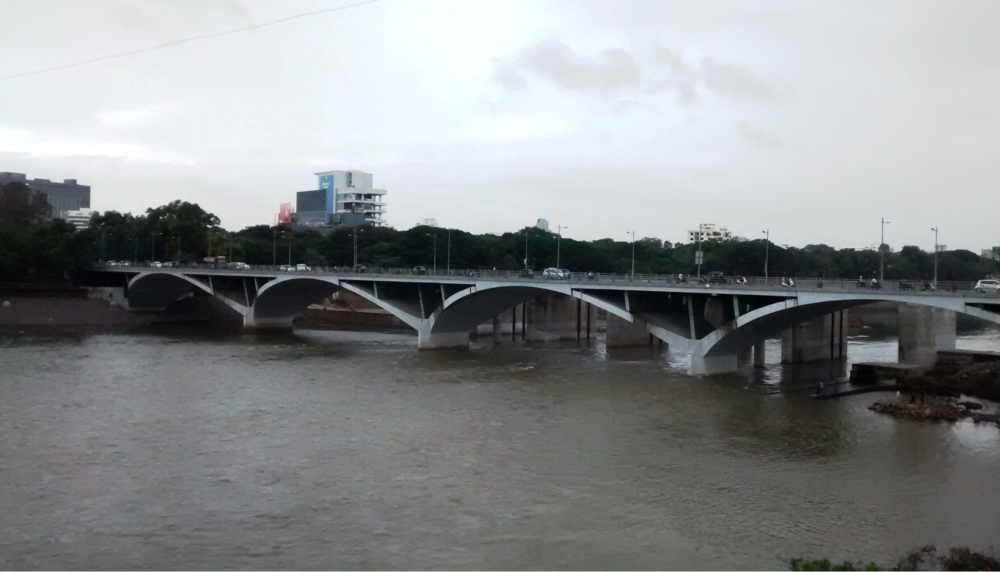

 The Sahaydri mountain ranges from which the river originates is one of the oldest, and the Mutha river is known to be older than the Ganga. The geological age of the river can thus be traced to around 1 lakh years! Geological evidence shows that the banks of the river were covered by lush green, dense forests and were home to elephants, aurochs, and ostriches as fossilised remains of bones and ostrich eggs have been found near the river banks.
The river banks provided an ideal place for the gradual change from the hunter gatherer phase to the agricultural phase. The silt deposited from the river provided a rich ground for the agricultural food chain, and fish, amphibians, herbivores, carnivores, all flourished along with humans on the banks of this river. The city of Pune gradually developed as well. There were fourteen ghats on the river where people bathed and prayed. As the population of the city began to increase, attempts were made to explore other sources of water. Lakes such as the Katraj were constructed near the outskirts of the city and water from the lake was supplied through underground channels. This led to the gradual expansion of the city away from the river. But then, people were still connected to the river as it was associated with their everyday lives. However, this was to change as the city grew, as industries came up, and dams were built to take care of the water needs.